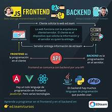

Tecnologias para ser FullStack developer
Que debes saber para convertirte desde cero en un desarollador FullStack
En nuestro blog podras estar informado de las ultimas novedades
Descubre las ultimas noticias en nuestro blog
Que debes saber para convertirte desde cero en un desarollador FullStack

"Full-Stack" ese término que se escucha cada vez más en el mundo del desarrollo web y que se ha convertido en una de las profesiones más demandadas en la actualidad. Pero, ¿qué significa realmente ser un Full-Stack developer? En este artículo, exploraremos el concepto de Full-Stack development y por qué es tan relevante en el panorama tecnológico actual.